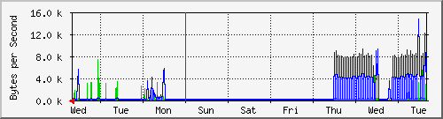
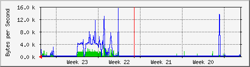
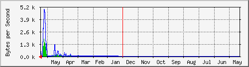

Traffic Analysis for 599 -- SW-12.126-DRL.Rack01.finanzas.df.gob.mx
| System: | SW-12.126-DRL.Rack01.finanzas.df.gob.mx in Proxmox-10.1.250.* |
| Maintainer: | alberto <luis.a.lol@outlook.com> |
| Description: | GigabitEthernet6/2 Seguridad.Publica |
| ifType: | ethernetCsmacd (6) |
| ifName: | Gi6/2 |
| Max Speed: | 125.0 MBytes/s |
| Ip: | No Ip (No DNS name) |
Estadísticas actualizadas el Miércoles 16 de Junio de 2021 a las 16:45,
'SW-12.126-DRL.Rack01.finanzas.df.gob.mx' ha estado funcionando durante 93 days, 1:01:09.
Gráfico diario (5 minutos : Promedio)

|
Máx |
Promedio |
Actual |
| Entrante: |
43.4 kB/s (0.0%) |
627.0 B/s (0.0%) |
102.0 B/s (0.0%) |
| Saliente: |
13.5 kB/s (0.0%) |
228.0 B/s (0.0%) |
93.0 B/s (0.0%) |
Gráfico semanal (30 minutos : Promedio)

|
Máx |
Promedio |
Actual |
| Entrante: |
7361.0 B/s (0.0%) |
536.0 B/s (0.0%) |
89.0 B/s (0.0%) |
| Saliente: |
14.7 kB/s (0.0%) |
1125.0 B/s (0.0%) |
95.0 B/s (0.0%) |
Gráfico mensual (2 horas : Promedio)

|
Máx |
Promedio |
Actual |
| Entrante: |
3655.0 B/s (0.0%) |
342.0 B/s (0.0%) |
831.0 B/s (0.0%) |
| Saliente: |
15.5 kB/s (0.0%) |
865.0 B/s (0.0%) |
108.0 B/s (0.0%) |
Gráfico anual (1 día : Promedio)

|
Máx |
Promedio |
Actual |
| Entrante: |
1821.0 B/s (0.0%) |
90.0 B/s (0.0%) |
403.0 B/s (0.0%) |
| Saliente: |
4902.0 B/s (0.0%) |
235.0 B/s (0.0%) |
183.0 B/s (0.0%) |
| VERDE ### |
Entrante:coming Traffic in Bytes per Second |
| AZUL ### |
Tráfico saliente en Bytes por segundo |